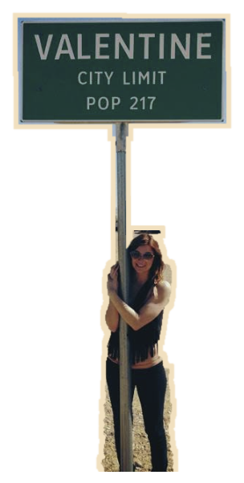
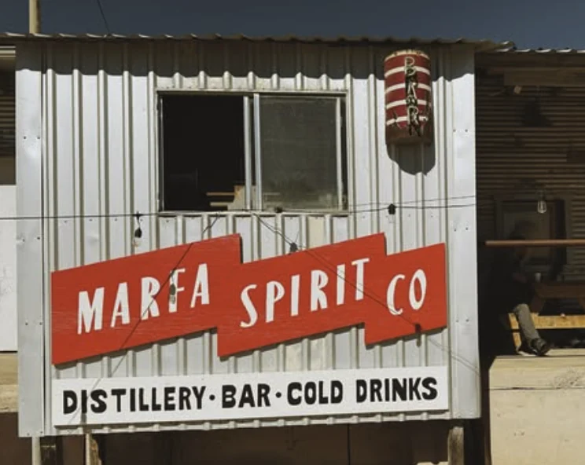

You found Beyond
The Marfa Crossing
Get the red Jeep from Valentine to Marfa Spirit Co. without being sideswiped by roadrunners, tornadoes, or suspiciously mobile hot dogs.


Goal: cross from the left sidewalk to the right sidewalk. Collisions send the Jeep back to Valentine. The sidewalks are safe; the road is not.